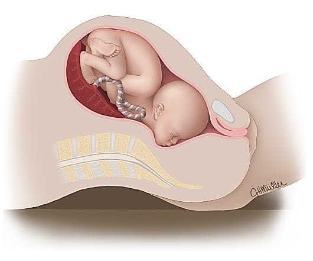

A rare cephalic malpresentation in which the fetal head is midway between flexion and extension — the brow is the presenting part and the frontal bone is the denominator. The chapter covers definition, causes, positions, diagnosis, the key mechanism fact (mento-vertical diameter 13.75 cm is longer than any pelvic-inlet diameter), and the clinical reality that vaginal delivery is essentially impossible — management is Cesarean section.
By the end of this chapter, the student should be able to:
Brow presentation sits between the two well-known cephalic attitudes:
Because the head is neither flexed nor fully extended, the largest presenting anteroposterior diameter of the skull engages the pelvis — and that diameter is too large to fit through the pelvic inlet.
Causes: like in occipito-posterior
The full fetal and maternal causes listed for occipito-posterior position (Chapter 22) also apply to brow presentation — prematurity, macrosomia, multiple pregnancy, polyhydramnios, congenital anomalies, cord around the neck, android / anthropoid pelvis, pendulous abdomen, placenta previa, pelvic tumors, uterine anomalies, and abnormal uterine contractions. See Chapter 22 for the complete list.
In brow presentation, the frontal bone is the reference point used to describe the position of the head (compare with face presentation where the denominator is the mentum, and vertex where it is the occiput).
The brow can present in two main position groups, each with right and left variants (4 named positions total):
The frontal bone is oriented toward the anterior pelvis (symphysis pubis).
The frontal bone is oriented toward the posterior pelvis (sacrum).
On vaginal examination (PV):
The chin is not felt in brow presentation — that is the single most useful clinical sign separating it from a face presentation. In face presentation the mentum (chin) is the leading point and is felt on PV; in brow presentation the leading point is the frontal bone and brow ridge, with the chin remaining out of reach.
The engaged diameter is mento-vertical diameter 13.75 cm which is longer than any diameter of female pelvic inlet, so labor becomes obstructed from the start.
The mento-vertical diameter is measured from the chin (mentum) to the most distant point on the vertex (crown). When the head is in the brow attitude, this is the anteroposterior diameter that must pass through the pelvic inlet. The female pelvic inlet has the following anteroposterior diameters (conjugate measurements):
Because the mento-vertical diameter (13.75 cm) exceeds all of these, engagement of a brow presentation through the pelvic inlet is mechanically impossible — obstruction is present from the very first stage of labor.
Brow presentation is the only cephalic presentation in which no mechanism of labor is possible:

Cesarean section.
Because the mento-vertical diameter (13.75 cm) cannot pass through the pelvic inlet, vaginal delivery is not possible. Any attempt at vaginal delivery will result in obstructed labor, with risk of uterine rupture, fetal trauma, and maternal exhaustion. The standard of care is Cesarean section as soon as the diagnosis is confirmed.
The source's management section is intentionally a single line — Cesarean section — because brow presentation has no safe vaginal option. There is no instrument, no maneuver, and no position that can convert this diameter to one that fits the pelvis. The head is in a mechanical dead-end; the only way out is operative delivery through an abdominal incision.
Because the presenting part (the brow) does not fit the pelvic inlet, the membranes are not well supported and PROM and cord prolapse are common. Any patient with brow presentation in labor must be monitored continuously for cord prolapse — a sudden fetal heart rate deceleration in a brow presentation should be assumed to be cord prolapse until proven otherwise.
Each student is requested to attend skill lab in order to be shown why (via using manikin simulation explanation) brow presentation leads to obstructed labor guided by bedside tutor of clinical round.
Please complete the self-assessment Google Form:
Google Form: https://forms.gle/JFZ9UxpSpoNPm9A86
.src-viz card. The image is extracted to extracted_images/24_brow_presentation/ for archival.